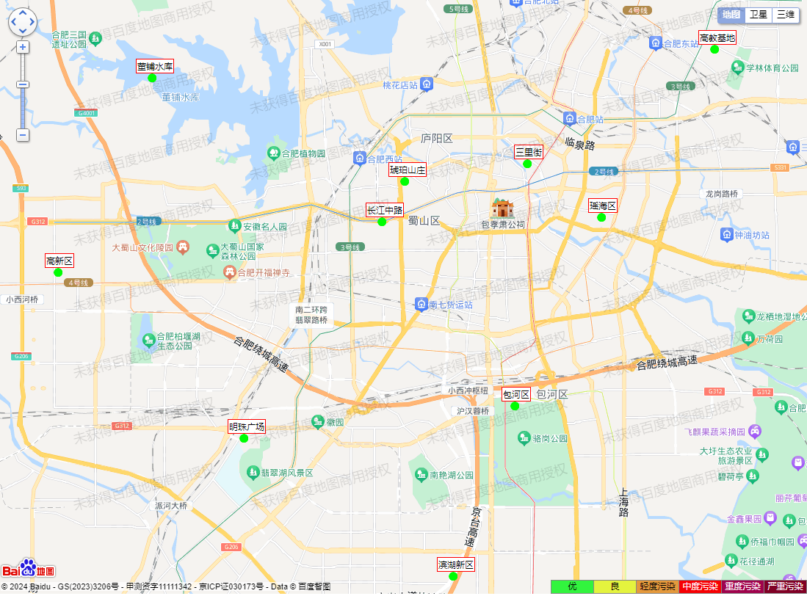
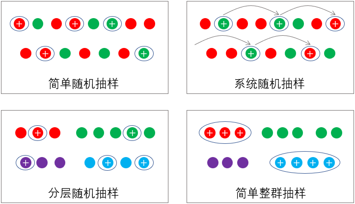
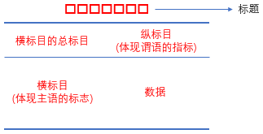
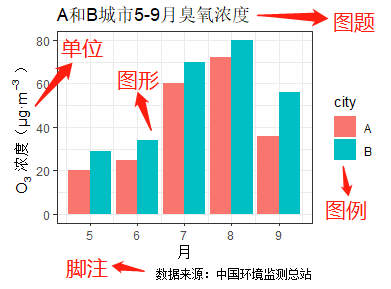
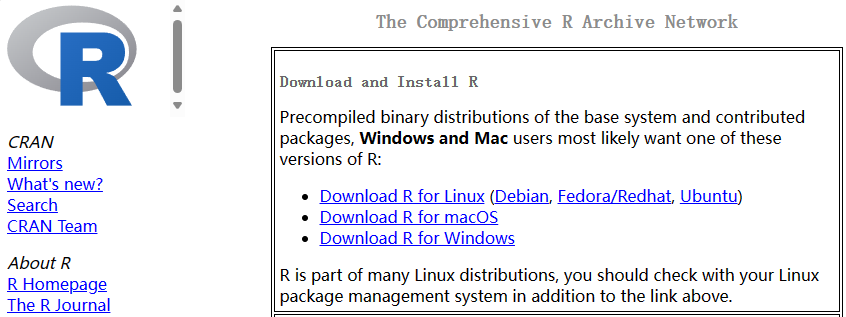
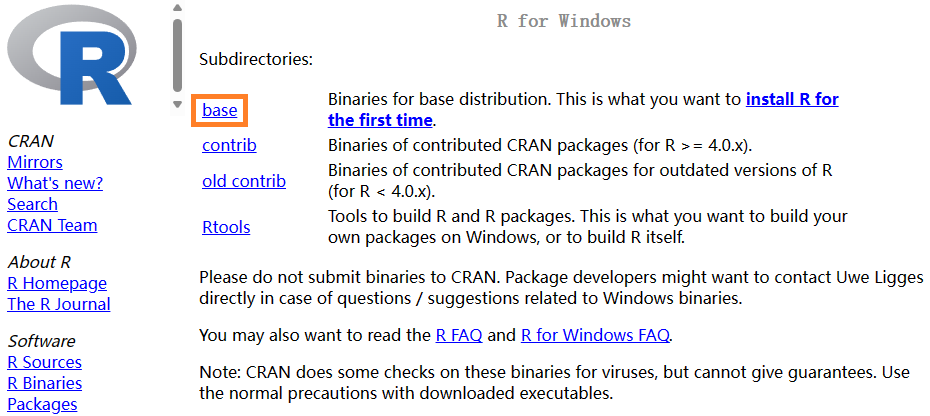
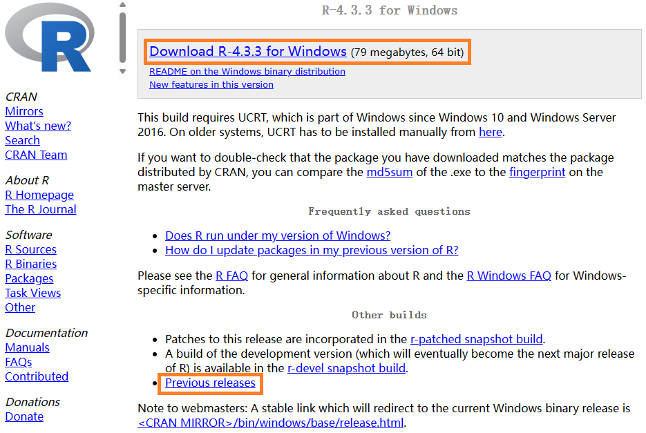
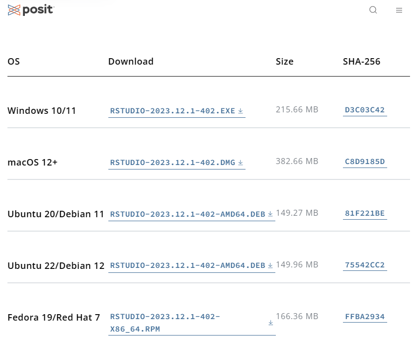
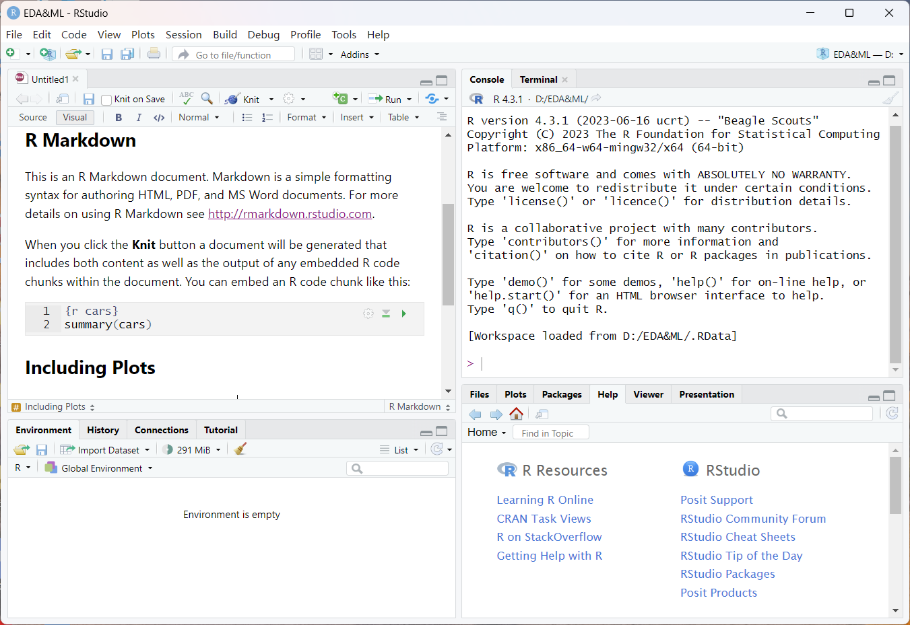

| 城市 | 浓度 |
|---|---|
| 北京 | 12 |
| 上海 | 17 |
| 天津 | 17 |
| 重庆 | 17 |
| 合肥 | 30 |
| … | … |
1 绪论
人类社会的发展史，一直伴随着数据的收集与记录，从简单到繁杂，由原始的“结绳记事”到出现文字以后的“文以载道”，再到近现代科学的“数据分析与建模”。以计算机为代表的现代信息技术让人类处理数据的能力得到质的飞跃。信息技术已经在各行各业得到广泛且深入的应用，推动数据成为继物质和能源之后的第三种战略资源。
1998年，美国原SGI公司首席科学家John Mashey首次提出“Big Data(大数据)”来描述数据量的快速增长带来的难理解、难获取、难组织、难处理等难题。2012年，牛津大学Viktor Mayer-Schönberger教授在其著作《Big Data: A Revolution That Will Transform How We Live, Work, and Think》中指出，数据分析将从“随机采样”、“精确求解”和“强调因果”的传统模式演变为大数据时代的“全体数据”、“近似求解”和“只看关联不问因果”的新模式，引发商业应用领域对大数据方法的广泛思考与探讨，并直接驱动深度学习(Deep Learning)技术的快速发展和广泛应用。
随着移动设备、信息传感物联网设备、航空(遥感)设备、软件日志、相机、麦克风、射频识别(RFID)读取器和无线传感器网络等设备广泛应用于收集数据，可用数据集的规模复杂度迅速增长，各行各业无时无刻不在产生大数据。环境科学与工程领域同样如此，例如大气污染自动监测的数据，污水处理厂的运行数据，无数生产企业的污染排放数据，等等。对这些环境数据的准确收集、正确处理、科学分析与建模是一项极其重要的工作，对生态环境保护工作具有重要价值。
本章内容包括数据和大数据的概念、基本统计学术语、数据类型及其特点、环境数据的来源、环境数据分析的一般步骤以及数据分析工具软件——R语言的简介与安装。
1.1 数据和大数据以及基本术语
1.1.1 数据与大数据
数据(Data)是指用来记载或描述客观事物性质、状态以及相互关系的、可识别的抽象物理符号或/及其组合。数据的形式不只是数值，还包括文字、图像、视频、音频、符号、地理位置等，在计算机系统中，不同形式的数据都是以二进制数字0和1的形式储存。与环境保护相关的各类数据统称为环境数据(Environmental Data)，包括污染源数据、污染物排放数据、环境本底与背景数据、环境污染现状数据、环境因子数据、环境工程治理效果数据等，如污染物浓度、排放量、种类、污染程度等。
数据只有经过处理和加工，才能转化为更有意义和价值的信息(Information)。信息是隐藏在数据背后的规律，需要探索、挖掘才能发现。信息之间产生联系，可以形成更加高级和抽象的知识(Knowledge)。
大数据的独特之处就是“大”，这表现为数据的数量(观测或样例，即数据表的行)和变量(特征或属性，即数据表的列)非常多，至少几百万行或上千列。从数据存储占用存储设备的空间来看，大数据动辄以GB、TB乃至ZB为单位。大数据的特点可以归纳为5V：数量(Volume)巨多、种类(Variety)繁杂、产生速度(Velocity)飞快、真实性(Veracity)存疑以及价值(Value)密度低。
随着各种传感器、遥感卫星等自动和高效获取环境数据的硬件设施日益完善，海量的环境数据将越来越多，迫切需要环境保护工作者掌握相应的分析方法和建模工具，将环境大数据转化为更加有价值的信息，用于对环境问题深入的理解和分析以及更好的模拟和预测，增强解决复杂环境科学与工程问题的能力。
1.1.2 统计学基本术语
统计学是一门收集、处理并分析事实与数据的应用科学。随着大数据特别是海量非结构性数据的增长，对数据的收集、存储和分析都发生了根本性的革命，数据科学(Data Science)也应运而生。数据科学使用科学方法、过程、算法和系统从复杂数据中提取或推断知识和见解，将统计学、数学、计算机科学、信息科学和领域知识中的相关技术和理论统一起来，更好地用大数据“理解和分析实际现象”。 数据科学不同于计算机科学和信息科学。图灵奖得主James Nicholas Gray认为数据科学是科学的“第四范式”(实证、理论、计算，现在是数据驱动)，并断言“由于信息技术和数据洪流的影响，科学的一切都在改变”。
尽管如此，统计学的基本思想和方法仍然是大数据分析和机器学习的基础，对基本统计术语和概念的熟悉有助于更好地学习数据分析与机器学习建模。
1.1.2.1 总体与个体
总体(Population)是统计所研究的客观事物全体的简称。构成总体的基本单位或个别事物，称为个体(Individual)，也称为总体单位(Population Unit) 。根据个体数是否有限，总体可分为无限总体和有限总体。
有研究价值的总体需要具备三个基本特征：同质性、大量性和差异性。同质性是指构成总体的所有个体必须具有至少一种共同性质，这是构成总体的客观依据。大量性是指总体必须由足够数量的个体组成，一个或少数个体构成的总体没有统计研究的意义，因为统计研究的目的是揭示大量事物的普遍性规律。差异性是指构成总体的所有个体除共同性质外，在其他性质上必须存在差异。差异性是统计研究的基础和前提，是信息存在的特征和反映，没有差异的总体没有研究的价值。
1.1.2.2 标志与指标
标志是个体各种特征或属性的名称，可分为数量标志和品质标志。数量标志描述个体的数量属性，标志值为数值，属于定量数据；品质标志描述总体单位的品质属性，标志值为文字和符号，属于定性数据。如对某河流的描述：河流级别为小型河流，水质等级为IV类，NH3-N含量为10.21mg/L，TP含量为13mg/L。这里的河流级别和水质等级为品质标志，而NH3-N和TP含量为数量标志。
指标是表征总体特征或属性的统计术语，分为数量指标和质量指标。数量指标描述总体规模或某类标志的分布特征，例如A市2020年COD排放总量；质量指标描述总体构成或某类标志水平的高低，如A市2020年PM2.5平均浓度。指标值一般是由总体中所有个体的标志值计算得到的，均以数值表示。
数量指标与质量指标的划分是相对的，在特定场景下可以互相转换。指标和标志随研究总体范围的变化也可以互相转换。
1.1.2.3 样本与抽样推断
在实际工作中，往往是从被研究的总体中抽取部分个体进行研究。这些抽取出来的部分个体构成的集合称为样本(Sample)或子样(Subset)。样本所包含的个体数量n称为样本容量或样本大小(Sample Size)。统计学研究要求样本的抽取方法必须遵循随机性原则，但在环境保护工作及其他一些领域中，有时需要采用非随机性抽样方法。
从总体中随机抽取样本用以研究总体的方法称为抽样推断(Statistical Inference)或抽样研究。抽样推断基于抽样分布理论。非随机性抽样获得的资料不能用于抽样推断。
1.1.2.4 参数与统计量
由总体资料计算出的统计指标称为参数(Parameter)，用于描述总体特征。由样本资料计算出的统计指标称为统计量(Statistic)，用于描述样本特征。抽样推断就是用样本统计量推断总体参数的过程。
1.1.2.5 变异与误差
变异(Variation)是指总体中各个体的同一标志值之间实际存在的差异，是总体差异性的来源，也是统计研究的基础和前提。误差(Error)是指某个标志值与其真值之差，也指统计量与参数之差。误差包括过失误差(Gross Error，也称粗差)、系统误差(Systematic Error，也称恒定误差或可测误差)和随机误差(Random Error，也称偶然误差或不可测误差)。过失误差可以避免，系统误差可以减少，而随机误差无法消除。
1.2 环境数据的类型
环境数据是与环境保护有关的所有数据，其分类与数据分类一致。 根据分类的依据不同，数据有不同的分类体系。
1.2.1 根据数据的性质分类
1.2.1.1 定性数据
定性数据(Qualitative Data)是指对客观事物性质、状态或相互关系进行定性分类的数据，一般以文字或符号表示，也称为类别型数据(Categorical Data)。有的定性数据之间是平等关系，如污染物超标状况之超标和未超标，又如性别之男和女，称为定类数据(Nominal Data)，这类数据的类别具有穷尽性和互斥性，且不具备任何数学特性，是最低级的数据。有的定性数据的类别之间存在特定顺序关系，如毒性分类数据，从无毒到剧毒，毒性逐渐增大，则称为定序数据(Ordinal Data)，这类数据的类别表示强度、程度或等级的不同，具有大于和小于的数学特征。
在计算机分析中，往往用数值对分类数据进行编码，实现数值化表示，以方便计算机进行处理和分析以及储存。如污染物排放超标状况数据，未超标用0表示，超标用1表示；又如污染物毒性分类数据，无毒、低毒、中毒、高毒和剧毒分别用0、1、2、3和4表示。
1.2.1.2 定量数据
定量数据(Quantitative Data)是指对客观事物性质、状态或相互关系进行定量描述的数据，以具体数字表示，也称为数值型数据(Numeric Data)。定量数据根据度量方法分为定距数据(Interval Data)和定比数据(Ratio Data)。前者如智商、温度等，不仅能将现象或事物划分为不同类别和等级，还可以数字化衡量不同类别或等级的间隔或距离，具有加减运算的数学特征，但不能进行乘除运算。后者如浓度、人口密度、收入、出生率等，能够进行加减乘除运算。有无具有实际意义的零点(绝对零点)，是定距数据和定比数据的唯一区别。
从信息含量上看，定比数据 > 定距数据 > 定序数据 > 定类数据。
定量数据还可根据取值的连续性与否分为离散型和连续型。有的定量数据的取值在取值范围内只能取整数，取值个数是有限的，则称为离散型数据，如某省铬浓度超标河流数为8，不可能是8.1或其他小数。有的定量数据的取值在取值范围内可以是任意数值，取值个数是无限的，就称为连续型数据，如湖水中总磷浓度为0.23mg/L；大气中SO2浓度为3.1μg/m3(虽然给出的是一个具体数值，但实际上，在取值范围内，这些数值可能是“任意”数值)。
定性数据和定量数据之间可以进行转换。例如对定性数据进行清点可以得到离散型定量数据，从离散型定量数据计算得到的相对数，如率、比等，就属于连续型定量数据。同样，连续型定量数据可以根据特定分类界值转化为离散型定量数据和定性数据。
1.2.2 根据数据的时空维度分类
1.2.2.1 截面数据
截面数据(Cross-sectional Data)是指在同一时间(时点或时期)对不同客观事物的相同属性或特征进行观察而获得的静态数据。如表1.1所示的同一时间不同城市的空气中PM2.5的浓度。
截面数据主要用于研究现象在不同客观事物之间的差异。因此，截面数据的显著特点就是离散度高，往往表现为无规律但非纯随机的变化，即所谓的“无法观测的异质性”。
分析截面数据要特别注意两个问题：一是异方差问题，因为截面数据采集自不同空间的样本，差异可能极大，例如工业区和风景区的空气污染物数据；二是一致性问题，主要包括样本容量是否一致、取样时间是否一致、测量标准或统计口径是否一致等。
1.2.2.2 时间序列数据
时间序列数据(Time-series Data)是指在不同时间上连续观察到的同一客观事物的一个或多个属性或特征的动态数据。时间序列数据用于研究现象随时间变化的趋势或规律。时间序列数据一般要求时间间隔相同或相同时长，但也有时间间隔不规则的。后一种时序数据的处理分析相对比较复杂。时间序列数据最显著的特征就是具有自相关性，可以通过自相关性分析时序数据的模式，进而建立时序预测模型。
| 日期 | 浓度 |
|---|---|
| 2021/7/1 | 30 |
| 2021/7/2 | 14 |
| 2021/7/3 | 6 |
| 2021/7/4 | 11 |
| 2021/7/5 | 10 |
| … | … |
时间序列数据的显著特点是具有日期或日期时间属性，一般包含长期趋势、季节变动、循环变动和不规则波动(包括随机变动和突发性变动)。现实世界中，时间序列数据无处不在，几乎所有的数据都有时间属性，只是时间属性在不同分析角度中的重要性不同而已。统计学上对时间序列的研究已经形成较为系统的分析方法和理论。
此外，一些不以时间为轴线的序列数据也可以应用时间序列分析的理论和方法，如随着海拔高度的增加而收集到的相应生态环境特征数据序列，又如随着土层深度增加的相关土壤特征数据序列等。表1.2即为时间序列数据的示例，它列出了同一城市在连续时间序列上的PM2.5浓度。
1.2.2.3 面板数据
面板数据(Panel Data)是截面数据与时间序列数据的组合，通常用于分析有关联的不同客观事物在相同时间序列上的特征，既可以对比分析不同客观事物随相同时间序列动态变化的规律和差异(纵向对比分析)，又可以分析同一时间上不同客观事物的差异(横向对比分析)。表1.3即为面板数据，它列出了多个城市在同一时间序列上的PM2.5浓度。
| 日期 | 北京 | 合肥 |
|---|---|---|
| 2021/7/1 | 80 | 30 |
| 2021/7/2 | 34 | 14 |
| 2021/7/3 | 99 | 6 |
| 2021/7/4 | 96 | 11 |
| 2021/7/5 | 0 | 10 |
| … | … | … |
当数据附加不同的地理空间信息(如经纬度)时，分析空间位置对其他特征的影响时需要采用空间数据分析方法。空间数据和时间序列数据一样，也具有自相关性，因为很多特征如植被、气候等随空间变化而变化。
除了以上常见的数据分类以外，还可以将数据分为结构化数据、半结构化数据和非结构化数据。结构化数据是指可以使用关系型数据库表示和存储，可以用二维数据表来呈现。半结构化数据难以通过二维数据表的形式来呈现，一般包含相关标记，用来分隔语义元素及对记录和字段进行分层，数据结构与内容混杂，但有特定的形式或规则，如HTML文档、JSON、XML等形式的数据。非结构化数据是没有固定结构的数据，如各种格式的文档、图片、图像、音频、视频等，此类数据一般直接存储为二进制的数据格式。
1.3 环境数据的来源
围绕研究的问题收集数据是第一步工作，也是最重要的环节，因为数据的真实性、代表性以及质量等会直接影响后续分析和建模的可靠性。环境数据主要来源于以下渠道：调查、实验、自动在线监测网络以及文献资料。从调查、实验以及自动在线监测网络(气象、水文、水质、大气等自动监测站，也包括航空和航天遥感等)直接获取的数据，称为初级环境数据(Primary Data)；从文献资料，包括从有关政府和非政府组织或机构发布的环境统计公报、环境统计年鉴、环境统计周报/月报/季报/年报以及学术期刊和专业网站获取的环境资料，一般都经过了加工和处理，称为次级环境数据(Secondary Data)。
随着信息与通信技术(ICT)和物联网(IoT)的发展，包括遥感技术在内的自动在线监测网络日益覆盖更多环境监测的领域。自动在线监测网络在无时无刻不间断地生产环境大数据，同时也存在极大的冗余，还会因仪器故障等因素造成数据缺失或异常。因此，对这类大数据的分析之前需要进行整理或清洗，以保障数据质量。
调查是研究者根据调查目的，对调查对象不施加任何干预因素，通过对调查对象的客观观察、记录和描述来收集数据。实验是研究者根据实验目的，主动地对实验对象施加特定干预因素，并控制非干预因素的影响，通过对实验效应的客观观测、记录和描述来收集数据。调查为实验提供线索，实验对调查加以验证。调查和实验是科学研究中最重要的手段，全球各地的环境科学与工程人员在源源不断地通过调查和实验生产各种领域的环境数据，可以综合利用这些数据实现在更广的空间范围对同类环境问题进行分析和建模。
1.3.1 自动在线监测网络
1.3.1.1 环境遥感
遥感是(Remote Sensing)是以电磁波(包括紫外-可见光、红外-微波的范围)为媒介，在高空或外层空间，通过飞机或卫星等运载工具携带的各种传感器(摄影仪、扫描仪、雷达等)获取地物信息，传递给地面接收站后进行处理和分析。环境遥感是利用遥感技术，对生态环境的动态变化进行监测，服务于环境质量预警、评价和预测以及进一步的决策等。遥感是快速、大规模获取环境数据的重要技术手段。遥感技术在环境领域的应用，主要体现在大面积的宏观环境质量和生态监测方面，在大气环境质量、水体环境质量和植被生态监测等方面都有非常广泛的应用。
环境遥感通过摄影和扫描两种方法获取遥感图像。摄影有黑白全色摄影、黑白红外摄影、天然彩色摄影和彩色红外摄影。彩色红外摄影效果最好，获得的环境污染影像轮廓清晰。扫描主要是多光谱扫描和红外扫描，用于观测河流、湖泊、水库、海洋的水体污染和热污染有较好效果。在红外扫描图像上常能发现污水排入水体后的影响范围和扩散特征。
我国目前主要的商业用途的遥感卫星有资源系列、环境系列和高分系列。国外知名的遥感卫星有美国Landsat系列、欧洲的Sentinel系列等。越来也多的高光谱分辨率遥感卫星的成功发射和应用，将推动应用遥感技术的各个领域的发展。环境遥感数据可以在有关网站申请下载，高分辨率遥感数据可以通过付费方式获得。
1.3.1.2 自动监测网络
集成先进的传感器技术和通信技术，在不同空间位置建立监测点，组成自动在线监测网络，对大气、水、噪声、土壤等环境进行持续不断地自动监测，并将数据实时传输到数据中心。图1.1显示了合肥市环境空气质量自动监测站的位置。

我国已经制定并颁布了《地表水自动监测技术规范(试行)》(HJ 915-2017)、《环境空气质量自动监测技术规范》(HJ/T 193-2005)、《近岸海域水质自动监测技术规范》(HJ 731-2014)、《功能区声环境质量自动监测技术规范》(HJ 906-2017)等几十项与自动监测有关的标准、规范和规定。还有很多自动监测或监控的技术标准、规范与规定正在制定之中。
目前我国城市环境空气质量自动监测网络和地表水水质监测网络基本建成，监测站点数仍在持续增加。相关监测数据通过中国环境监测总站和各地的生态环境监测中心实时发布给社会公众。
自动监测网络获取的数据因仪器故障、外界干扰等因素可能导致数据缺失和异常。理论上，每分钟都可以获得监测数据，但如此小的时间尺度上的监测数据会存在严重的冗余，因此，我国目前对外发布的自动监测数据一般是小时尺度上的平均值。
1.3.2 环境调查与实验研究
1.3.2.1 调查研究
根据调查范围，调查分为普查(也称全面调查)和抽样调查。普查是对总体的全部个体进行调查的方法。普查必须统一调查方法和调查技术要求。由于普查需要耗费极高的人力、物力、财力和时间成本，往往间隔很长时间才开展一次，例如人口普查。抽样调查是从总体中抽取部分个体进行调查的方法。根据是否遵循随机抽样原则，抽样调查分为非随机抽样调查和随机抽样调查。

非随机抽样调查方法有典型调查和重点调查等。典型调查是根据调查目的，在对总体全面分析的基础上，从中选择具有代表性的若干个体进行调查的方法。典型调查的关键是所选择的个体具有典型性。例如研究某些行业的产排污系数，就需要抽取这个行业中的典型企业进行调查研究。重点调查是根据调查目的，在对总体全面分析的基础上，从中选择少数重点个体进行调查的方法。重点调查抽取的个体，在总体中的数量不多但在与调查研究相关的标志总量中占比极大。
随机抽样调查的方法主要有简单随机抽样、系统抽样、分层抽样和整群抽样等。随机抽样调查的数据资料对总体具有很好的代表性，可以用来推断总体特征，是获取推断性统计分析数据的重要途径。
按调查组织形式，调查可分为统计报表制度和专门调查。统计报表制度是根据统计法规建立的定期自基层组织逐级向上报告数据的制度，有统一规定的报表样式、上报内容、计算方法、上报时间和上报程序，是很多行业获取全面数据的重要基础设施。我国自上世纪80年代建立环境统计报表制度，经过近40年的发展完善，逐步成熟，“十三五”期间的环境报表制度包括18个综合年报、10个基层年报、6个综合季报和6个基层季报。专门调查是为了研究某个问题或某种现象而专门组织的调查形式，通常都是一时性的调查。
随着互联网络特别是移动互联网应用的普及，网络调查日趋流行。通常将通过网站、电话、社交软件等平台开展的调查归为网络调查。网络调查的对象局限于上网群体，其结果需要注意代表性、可信度以及对调查内容理解的准确性问题。
1.3.2.2 实验研究
实验研究不仅要求系统性和周密性，更要求严谨性和针对性，要能够找到现象背后的原因，揭示现象发生或变化的内在规律。实验研究的基本要素包括实验因素、受试对象和实验效应。实验因素可分为物理因素、化学因素、生物因素。受试对象要符合明确的规定而具有一定的同质性。实验效应即实验中所要观测的指标，分为计数和计量两种，这些指标应具有客观性、精确性、特异性和灵敏性。
实验研究及相应的实验设计必须遵循对照、随机、重复、均衡四个原则。对照原则要求设立基准处理作为对照，为实验因素的处理效应提供比较的基准；随机原则要求将各实验处理随机地分配给受试对象，以减少人为因素的影响；重复原则要求对实验处理设立多个重复，通过计算各重复的平均值来减少非实验因素的干扰。均衡原则要求各处理的非实验因素均衡一致，以准确揭示实验因素的效应规律，这除了要求受试对象具有尽可能高的同质性以外，还要求环境条件要控制在规定的状态。此外，实验研究对样本含量的大小也有具体的要求，以确保试验结果可靠。
根据实验研究的类型和目的不同，而有对应的实验设计方法。实验设计的重要性在于既要满足实验研究的稳定性和可靠性，又要降低实验研究的成本。主要的实验设计方法有完全随机设计、随机区组设计、不完全随机区组设计、拉丁方设计、格子设计、\alpha设计、析因设计、正交设计、均匀设计等。
1.4 环境数据分析的一般步骤
环境数据分析的步骤包括明确目的、收集数据、整理数据、分析数据、可视化及总结与应用。
1.4.1 明确目的
数据分析任务的第一步就是要明确分析研究的目的。例如对于研究合肥市空气污染的动态规律和研究巢湖的蓝藻水华发生机制两个任务，收集数据的方向和范围完全不同。
1.4.2 收集数据
根据分析研究目的，通过合理的途径收集相关数据，并力求准确、全面和完整。在有些数据不可获得时，应尝试修订分析研究的目的。在获取次级环境资料的时候，要注意来源的权威性，以确保数据的质量。当以调查和实验来获取初级环境资料时，应注意调查方案和实验设计的可行性和科学性。
1.4.3 整理数据
整理数据是在分析数据之前保障数据质量的最后一个环节。所有来源的数据都可能存在缺失值、异常值、空白值、重复值、错误值等情况，如果不进行处理，可能对后续的数据分析产生干扰，甚至不能完成分析。数据整理也称为数据清洗，主要任务就是对数据中的缺失值、异常值、空白值、重复值、错误值等进行处理，提升数据的质量。
1.4.4 分析数据
数据经过整理之后，采用相关的分析方法进行深入的分析。数据分析存在多个相互关联的环节，例如先通过分析特征属性与研究靶标之间的相关性，筛选出相关性高的特征，然后利用筛选出的特征建立研究靶标的模拟和预测模型。常用的分析方法有传统的统计分析方法，如描述性统计方法(统计汇总、平均指标、变异指标、相对指标)、推断性统计分析(置信区间、假设检验、方差分析)、相关分析、聚类分析、主成分分析、回归分析等，还包括大数据挖掘中关联规则分析方法等，以及机器学习和深度学习方法在特征提取、数据降维、模拟和预测等方面的应用。
1.4.5 可视化
可视化可以应用在数据分析的各个阶段，包括原始数据、整理后数据、分析后的结果(包括模型模拟和预测的结果)以及最终的总结阶段。最重要的应属整理和分析结果的可视化。
可视化的方法有表和图。表主要用于保存数据整理和分析的结果，不是十分直观，在数据较多时，不能让受众快速理解。图是应用最广泛且类型最丰富的可视化形式，直观明了，易于理解。
1.4.5.1 表
表是指按一定顺序和格式排列数据的表格。表从构造元素上看，由文字、数字、表线组成；从外形上看包括一个标题和一个表体；从内容上看主要包括各种标目和数据，其中标目分为横标目(主语)和纵标目(谓语)。
为了避免过多线条影响数据的呈现，一般采用三线表形式(如图1.3所示)。

复杂的表可以允许有更多的横线和必要的竖线以进行分组。表1.4就是一个增加了一条横线作为分隔线的衍生三线表。
| 年度 | 污染物浓度 | |||
|---|---|---|---|---|
| year | P1 | P2 | P3 | |
| 2017 | 0.05 | 0.07 | 0.35 | |
| 2018 | 0.04 | 0.08 | 0.47 | |
| 注：网页格式可能会以斑马色样式显示行数据 | ||||
列表原则有两点：一是重点突出，简单明了。即一张表只包含一个中心内容，不要包罗万象，应让人一目了然。二是主谓分明，层次清楚。即主谓语的位置不要错乱，标目的排列及分组要层次清晰，符合专业逻辑。
表包括标题、标目、表线、数字和说明五个部分，其基本要求如下：
(1)标题。简要概括统计表的基本内容和表中资料所属的时空特征，一般位于表格的上方。
(2)标目。标目文字应简明，并注明单位；排列要遵循一定顺序；项目齐全时，先局部后整体，即上(左)面列出各组分类，最下(右)列出总计的数据；项目不全时，一般先列出总计的数据，后列出其中部分重要项目的资料。如果行列过多，通常要加上编号。
(3)表线。表线不宜太多，尽量简化，应采用三线表及三线表的扩展形式，纵线一般只在做必要分隔时才采用。
(4)数字。表中数字应对准数位，填写整齐。数字为0则填写0；数字缺失或未记录则填“…”或“NA”或其他规定符号；无法计算或没有数字则填“—”或“NULL”或其他规定符号。
(5)说明。不列入表内，一般放置在表的下方，用于注明表中某些资料的来源或对某些数据的计算方法、计算口径做出说明。通常要在表格中对要说明的标目或数字用“*”标注，要说明的项目比较多时，采用字母或数字标注。
1.4.5.2 图
图是指利用各种图形来表现统计资料的可视化形式，具有简明、直观、形象和感染力强等优点。图从结构上看由文字、数字和图形组成，从外形上看由一个标题和一个图体组成。图一般包含五大元素：图题、图形、图例、单位和脚注(包括数据来源)，如图1.4所示。

图一般根据用途可以分为：
(1)描述相互独立的资料或离散型数据，宜用直方图等。
(2)描述总体构成情况，常用圆形图/饼图、百分比直方图等。
(3)描述连续型数量指标的频数分布，宜用直方图等。
(4)描述事物在时间上的连续变化，可用线图等。
(5)描述事物在空间上的分布情况，宜用地图等。
(6)描述总体分布形态特征，可用密度曲线图、箱线图、小提琴图等。
创建图的基本要求如下：
(1)标题。简明扼要地说明图的内容及时空属性，一般位于图的下方。
(2)坐标。绝大部分图有坐标轴，坐标轴应有标目，标目应注明单位。
(3)尺度。一般要求等距或有一定规律(如对数尺度)，并标明数值。遇到特殊情况，尺度可用“\”断开，表示尺度的跳跃。
(4)图例。同一个图中存在多组或多类时，应用不同颜色或形状区分，并设图例说明。 (5)外观。要求美观，图的长宽比例要协调。
1.4.6 总结与应用
撰写总结报告，即对整个数据分析过程进行总结，重点是呈现结果并提出建议，包括将分析结果(如模型)应用于分析、模拟、预测和解决相关问题，供决策参考。一个好的数据分析总结报告，不仅要有明确的结论、建议和解决方案，而且要图文结合、层次明晰，可以让读者一目了然。
1.5 环境数据分析的软件工具
可用于数据分析的软件皆可用于环境数据分析。传统统计分析与建模软件，如SPSS、SAS、Stata等，均是需要付费使用的商业软件；Excel、WPS表格等办公电子表格软件可以处理一些较小规模数据，对大数据无能为力；Matlab等科学计算软件也可用于数据分析和建模；FineBI、Tableau等企业级数据分析商业软件，具有强大的数据分析与可视化功能，但也是需要付费使用。通常，建议初学者采用免费开源的软件工具，如Python、Julia和R等。Python和R是解释型语言，在交互性上有优势，Julia是编译型语言，在运行效率上有优势。
R语言由新西兰奥克兰大学的Robert Gentleman和Ross Ihaka等人基于S语言开发，是一个自由、免费、开源的软件，主要用于统计分析和绘图，可运行于Linux、macOS和Windows等操作系统的计算机上，2000年2月发布了1.0.0版本，截至2024年4月的最新版本为4.4.0版。
R拥有完整的数据分析功能和帮助系统，是一套完善的、简单的、有效的编程语言，具有条件、循环、自定义函数、输入输出等完整的程序设计方法，是数据科学家的必备工具之一，已广泛应用于医学、生态学、地理科学、环境科学、气象学、农学、物理学、数学、生物信息学、数据挖掘、金融分析、机器学习等诸多领域，其核心功能是数据处理、统计分析、可视化和建立模型。
因此，基于免费开源、完整数据分析的功能以及易于学习和使用的考虑，本书介绍R语言及其在环境数据分析与机器学习中的应用。
1.5.1 R语言下载和安装
在浏览器访问CRAN网站https://cran.r-project.org/，在网页左侧点击“mirrors”，进入镜像网站页面，在“China”下面的镜像网站中选择其中之一打开，即可进入国内的R镜像网站。然后根据计算机操作系统类型(Linux、macOS、Windows)来点击相应的链接(如图1.5所示)。

以Windows系统为例，点击“Download R for Windows”，打开如图1.6所示的页面：

点击“base”链接，进入R安装程序下载页面(附录图1.7)：

点击最上面的链接即可下载最新的R安装程序。如需安装以往版本，在该页面下方找到并点击“Previous releases”，即可找到以往版本的链接，根据版本号再点击相应链接下载即可。
R安装程序下载完成后，双击运行，根据提示即可顺利完成安装。Windows系统安装时建议修改默认安装路径，将R安装到非系统盘，如“D:\R”。其他操作系统安装R参考安装帮助。
安装完成后，桌面就会有R程序的快捷图标，双击就可以打开R的图形操作界面，即RGUI，但其功能过于简单，为了更好地使用R语言，需要安装一个功能更强大的R集成开发环境(IDE)——RSutdio。
1.5.2 RStudio的下载与安装
在浏览器访问Posit公司网页https://posit.co/download/rstudio-desktop/，下滑页面，找到如图1.8所示的内容，根据计算机操作系统类型选择下载相应的RStudio Desktop版本安装程序。

下载后双击启动安装程序，按提示操作即可完成RStudio的安装。Windows操作系统建议将默认安装目录改到非系统盘，如“D:\Rstudio”。其他系统安装RStudio或安装RStudio Sever版本应先阅读安装帮助。
安装完成后，在开始菜单栏中找到RStudio，点击右键，在弹出的菜单中点击“创建快捷方式”，就可以在桌面上创建RStudio快捷图标。双击快捷图标，即可进入RStudio的操作界面(如图1.9)。建议初学者先花20分钟时间来了解操作界面，包括菜单、工具栏、各种操作窗口等。

“File”菜单创建和保存各种文件和项目，以及导入各种类型的数据。控制台即“Console”窗口以命令行操作的方式来执行R的简单和较少的代码，大量复杂的代码应该在R Scripts文件(保存为*.R，保存R代码且可以创建注释，注释是以“#”开头的单行文字)，如果有很多的文字论述，建议创建R Notebook(保存为*.Rmd，可输出为html文件)、R Markdown文件(同样保存为*.Rmd，可输出为html、pdf、doc文件，并拥有各种展示功能)或R Quarto文件(保存为*.qmd，是R Markdown的下一代版本，支持更多编程语言)，将代码和文章融合在一起，以便于重现代码执行结果和分享。
“Edit”菜单用于编辑的各种操作。
“Code”菜单是关于代码的有关操作。
“View”菜单主要用于视图操作。
“Plots”菜单用于绘图方面的一些操作。
“Session”菜单用于会话(R的工作环境和工作空间)的操作。
“Build”菜单主要应用R的项目管理。
“Debug”菜单用于代码或程序调试操作，以便找到代码和程序出错的地方。
“Profile”菜单用于分析代码和程序，以提高代码运行效率。
“Tools”菜单用于工具包安装和更新、R项目的版本控制、全局环境配置、内存管理、启动终端及Shell程序等。
“Help”菜单是最好的入门“老师”，关于R和RStudio使用的问题，基本上都可以在这里找到答案，其中的“Cheat sheets”链接到RStudio和一些工具包的快捷学习资料。
Rstudio的操作界面除了菜单和工具栏以外，就是下面的四个子窗口：
(1)左上工作区为程序代码撰写区，并有相应的代码编辑和运行的工具图标。启动RStudio后可能看不到该区域，二是被右下区域完全占据。当通过“File菜单”创建一个代码文件后，即可显示此区域。此区域输入的代码，可以通过点击“Run”图标执行光标所在的代码行，也可以键入Ctrl+EnterCtrl+Enter组合键实现同等效果，运行的代码、结果以及警告、错误等信息会在右上的“Console”窗口中显示。
(2)左下工作区包括Environment(查看和管理当前工作空间中的所有对象包括变量)、History(查看和管理在 Console区内代码执行的历史记录)、Connections(用来连接外部数据库)以及Tutorial(执行基于learnr工具包的R、Rstudio和一些重要工具包的使用教程，运行信息会显示在右上的Jobs标签的窗口中)。
(3)右上工作区包括Console(控制台，类似RGUI工作区，以命令行方式输入和运行代码并查看运行结果)、Terminal(打开操作系统的终端窗口，以命令行防治执行操作系统的操作)和Jobs(显示某些操作Tutorial执行的结果)。
(4)右下工作区包括Files(文件夹及文件显示区，可通过右上角“…”图标来修改文件夹)、Plots(绘图显示区)、Packages(工具包管理区，前面显示的表示已经加载到当前工作空间)、Help(帮助系统，执行有关帮助操作的结果也会在这里显示)和Viewer(用来显示本地网页文件)。 在代码文件编辑窗口和Console中输入代码时，按 Tab 键可以帮助补全代码和提供有关函数的提示信息。Ctrl+LCtrl+L组合键用于清除Console窗
Rstudio软件具有非常强大且好用的功能，建议花一些时间去官网或其他网站学习Rstudio的使用，特别是掌握一些快捷键的使用，如Alt+-Alt+-用于输入R的左赋值符号<-，Ctrl+Shift+MCtrl+Shift+M用于输入管道操作符%>%或|>，Ctrl+Alt+ICtrl+Alt+I用于在R Markdown文件中插入一个代码块，Ctrl+Shift+CCtrl+Shift+C用于将选中的代码行转换为注释行等。
此外，建议安装Rtools软件工具(同样在CRAN网站下载)，以便安装需要编译的包(package)。
练习 1.1 下载并安装R语言。Windows系统安装到“D:\R\”目录。
练习 1.2 下载安装R Studio软件。Windows系统安装到“D:\RStudio\”目录。
练习 1.3 下载并安装Rtools软件。按默认目录安装。